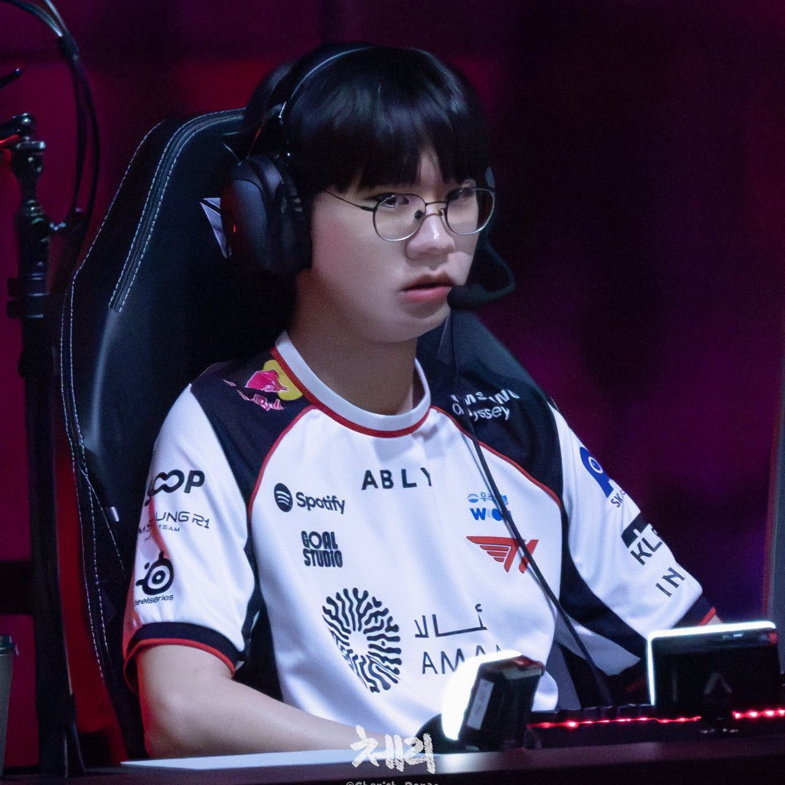

Player Overview
Choi Hyeon-joon (최현준), internationally known by his summoner name Doran, is the starting Top Laner for T1. Born on July 22, 2000, in Changwon, South Korea, Doran stands at 182 cm with Blood Type O. Since making his official LCK debut on July 20, 2019, he has solidified his place as one of the most resilient and clutch top laners in League of Legends history.

Official Identity
The alias "Doran" originated from his very first LoL account name: "Chose Doran since first-birthday ritual."

Fearless & Selfless Playstyle
Renowned for his weak-side mastery, Doran excels at absorbing relentless enemy jungle pressure to enable team carries, followed by daring frontline initiations in decisive teamfights.
Iconic Nicknames & Community Monikers
- Teacher Lan / Lan: Friendly Korean fan nicknames highlighting his approachable and gentle personality.
- Squirrel / Rabbit / Egg: Inspired by his round spectacles, adorable smile showing front teeth, and youthful appearance.
- Mad Dog Lan / Superstar / Rando: Activated whenever Doran enters high-octane carry mode, delivering jaw-dropping solo kills against top-tier opponents.